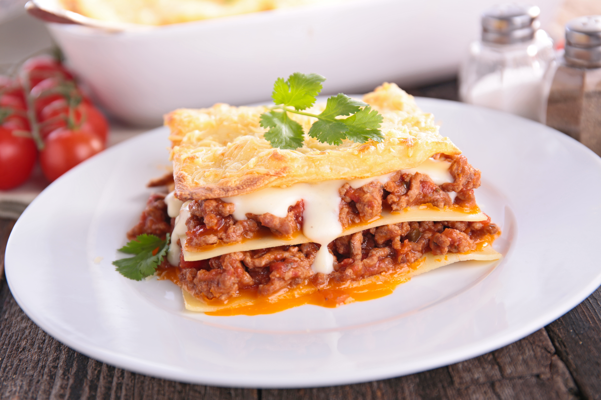

Lasagne

Fast Lasagne
This is a lasagne you can make quickly for a delicious family meal.
Ingredients
- 6 large dried lasagne sheets
- 75g/2¾oz mature cheddar, grated
- 450g/1lb pork sausage meat
- 1 tbsp oil
- 1 tbsp plain flour
- 1 red chilli, deseeded and finely chopped
- 2 fat garlic cloves, crushed
- 250g/9oz chestnut mushrooms, sliced
- 200ml/7fl oz full-fat crème fraîche
- 100g/3½oz baby spinach, roughly chopped
- 500g/1lb 2oz passata
- 2 tbsp sun-dried tomato paste
- 1 tsp light muscovado sugar
- 1 tbsp each thyme and sage leaves
Steps
- Preheat the oven to 200C/180C Fan/Gas 6. Grease the ovenproof dish with butter.
- Soak the lasagne sheets in recently boiled warm water to soften while you prepare the two sauces.
- For the pork and spinach sauce, heat the oil in a large, non-stick frying pan. Add the sausage meat and brown over a high heat for 5 to 10 minutes until golden-brown, breaking up the mince with two wooden spoons. Sprinkle in the flour and fry for a minute.
- Add the chilli, garlic and mushrooms and fry for about 5 minutes. Stir in the crème fraîche and spinach. Bring to the boil and allow to bubble for a couple of minutes. Season well with salt and pepper and set aside.
- For the tomato sauce, mix all the ingredients together in a jug or bowl and season well with salt and pepper.
- Spoon one-third of the spinach sauce into the base of the ovenproof dish. Spoon one-third of the tomato sauce on top and arrange half the lasagne sheets over the tomato sauce. Repeat using two more layers of spinach and tomato sauce and one of lasagne sheets. Sprinkle over the grated cheese.
- Bake for 30 to 35 minutes, or until the pasta is tender and the top of the dish is golden-brown and bubbling around the edges. Serve immediately.
Home